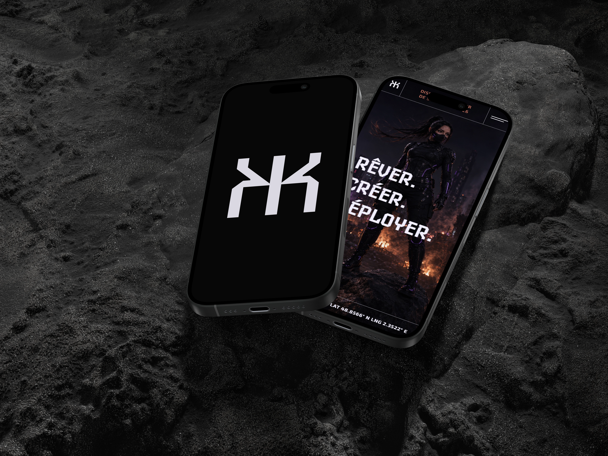
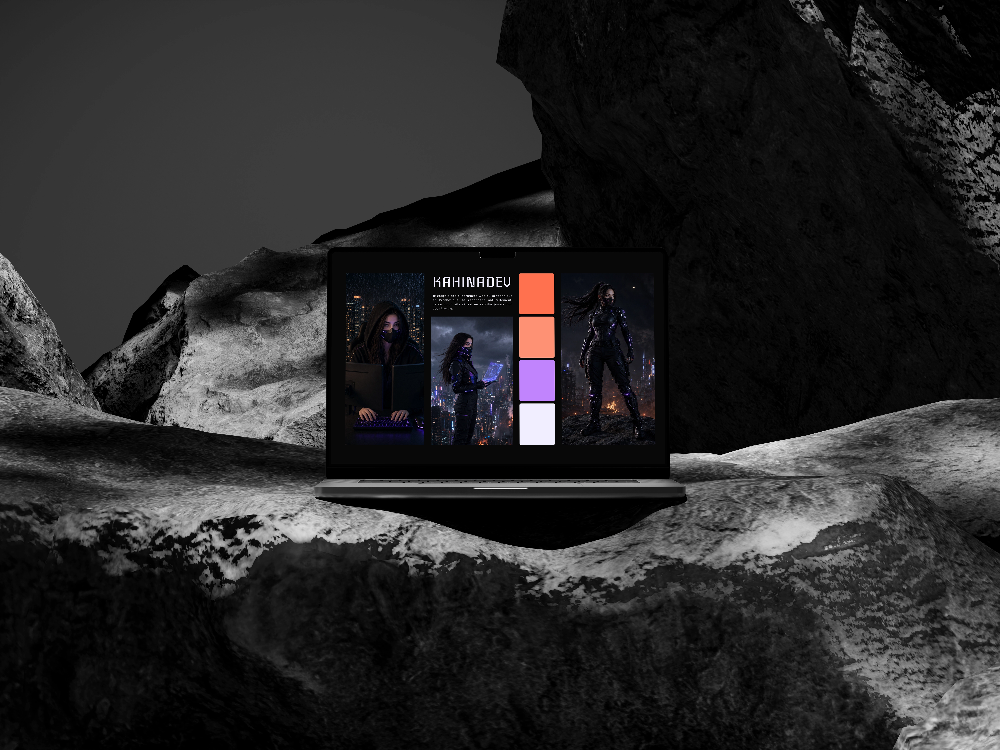

{ Portfolio }
My previous portfolio no longer represented me. It was functional, sure, but it lacked that something that makes people remember it. Tis redesign isn't just a technical update, it's a statement. I wanted to create a more creative space, width a bold visual identity and colors that own themselves, and an atmsophere that hits immediately.

Context & goals
For this V4, I wanted to push the visual identity much further, with a clearly cyberpunk and
futuristic
art direction, without changing my technical stack.
This redesign pursues several objectives:
A strong visual identity:
moving beyond a classic portfolio format to create a space that leaves a mark from the very
first second.
A freelance showcase:
convincing future clients of my ability to design polished and original web experiences.
A stepping stone toward a work study
program:
demonstrating my technical and creative skills as part of my application for a master's
degree.
A space for creative expression:
showing that I'm not limited to execution, but that I can imagine and carry a full art
direction.
Art direction
The world of this portfolio is directly inspired by cyberpunk aesthetics and video games. Bright colors, strong contrasts, and bold typography, designed to create an immersive atmosphere from the very first second.


Process & Technical Choices
The technical stack stays the same. What changes is the rigor: more structured, more thought
out, more polished code.
HTML: for the structure.
Sass: for styling.
JavaScript: for interactions and
effects.
Bootstrap: for responsive.
Features
New version, new features.
The idea: stay true to the cyberpunk universe without ever going overboard.
Dynamic header: GPS coordinates,
and
a system status carousel, for a control room feel.
Scramble text effect: on hover,
the text
scrambles before settling on the final word.
Parallax effect on the hero
section: the background reacts to mouse movement to add depth.
Next steps
Once deployed, the focus shifts to performance optimization: the current score is 74/100, the goal is to reach 90 and above. This optimization will happen once the website is live, in ordre to precisely identify friction points: image weight, load times, or JavaScript optimizations to refine.